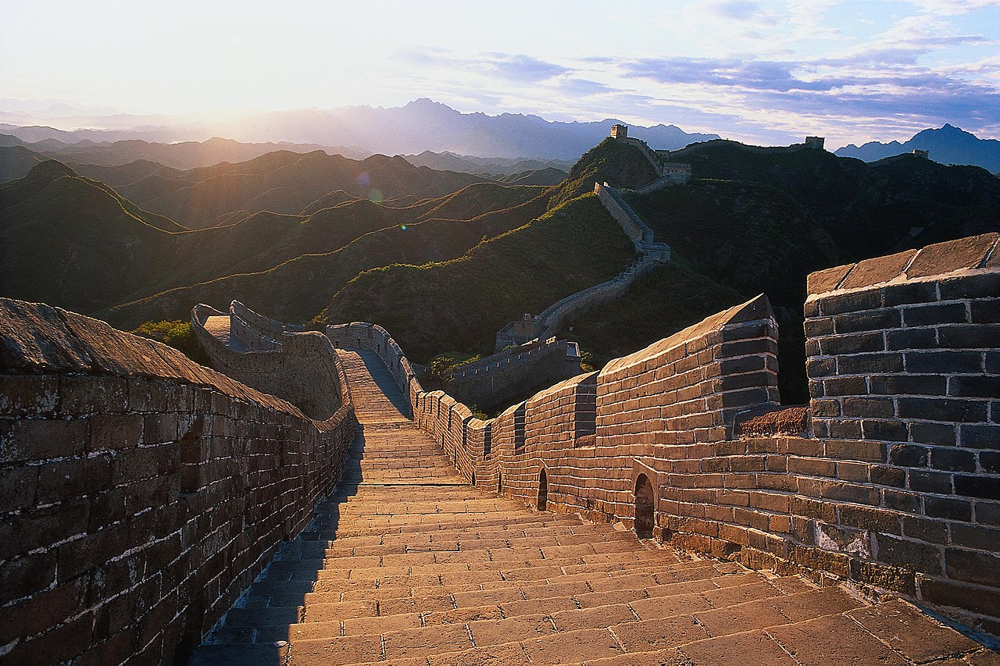

Turistas


Didžioji kinų siena (kin. 長城, pinyin: Chángchéng, t. y. „Ilgoji siena“) – istoriniai gynybiniai įrenginiai palei istorines šiaurines Kinijos sienas, turėję saugoti Kinijos valstybes ir imperijas nuo klajoklių antpuolių iš Eurazijos stepės. Keletas sienų buvo pastatytos jau VII a. pr. m. e. Vėliau jos buvo apjungtos, padidintos bei sustiprintos ir dabar bendrai vadinamos Didžiąja siena. Garsiausia yra siena, kurią 220-206 m. pr. m. e. pastatė pirmasis Kinijos imperatorius Ši Huangdi. Iš šios sienos mažai kas išliko. Po to, Didžioji siena buvo vis perstatoma, plečiama ir tobulinama; didžioji dalis iki šiol išlikusių sienos fragmentų yra iš Mingų dinastijos laikų. Pagal išsamius archeologinius tyrimus naudojant modernius tyrimų metodus paskaičiuota, kad Mingų siena buvo 8850 km ilgio.[1] Iš šio ilgio 6 259 km buvo pati siena, 359 km - gynybiniai grioviai ir 2232 km gamtinės kliūtys - kalvos ir upės. Pagal kitą archeologinį tyrimą siena su visomis jos atšakomis buvo 21 196 km ilgio.[2] Tai – ilgiausias rankų darbo statinys pasaulyje. Pagrindinė siena puikiai pritaikyta prie reljefo, vingiuoja palei upių vagas, slėnius ir kalnus. Siena buvo statoma iš akmenų, žemės ir molio, o sienos dalys rytuose buvo apmūrytos plytomis. Apačioje jos plotis 4,6–9,1 m. (vidutiniškai 6 metrai), o viršuje iki 7,6 m. Jos aukštis siekia vidutiniškai 7,6 m (neįskaitant dantytos gynybinės sienos). Maždaug kas 180 m buvo įrengti sargybos bokštai (apie 12 m aukščio).
